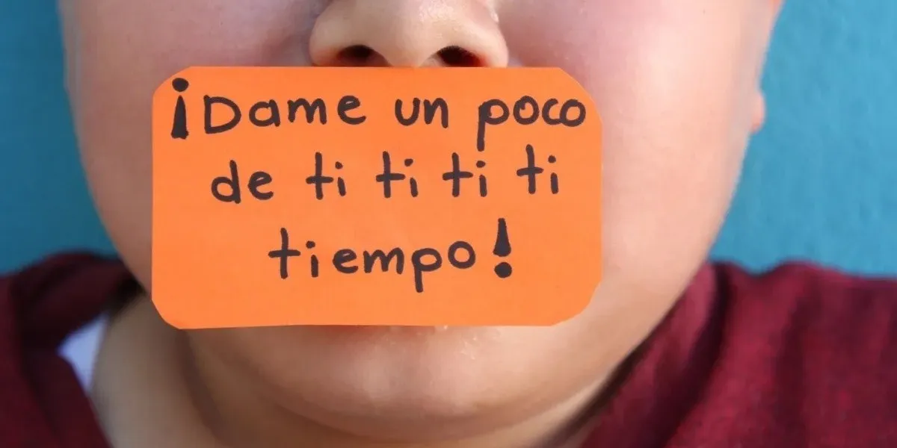

SOY LORENA ORRELLANA Fonoaudiologa
Graduada de la Univercidad Nacional de La Plata en el año 2022, desde entonces me dedico a brindar mis conocimientos en ayudar a quienes padecen patologias y trastornos en el habla.
Me especialiso en ...
Tartamudes
La tartamudez no es una discapacidad, sino un trastorno que afecta la fluidez normal del habla. Está relacionado con la forma en que el cerebro procesa y programa los movimientos del habla y no tiene nada que ver con la capacidad intelectual o la inteligencia.
Terapia Ocupacional
La Terapia Ocupacional en el campo de la infancia atiende a niños y niñas de todas las edades, los cuales tienen dificultad en su desarrollo, tanto físico, emocional y social.
Neuropsicologia

La Neuropsicología es una disciplina que converge entre la Neurología y la Psicología. Estudia la relación entre las estructuras cerebrales, las funciones cognitivas y los procesos emocionales y de la conducta.